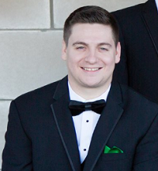

About Me
I received an Applied Science degree in computer maintenance and networking at Lorain County Community College. During that period I received my first introduction to coding, which eventually led me to the Coding Bootcamp at Case Western Reserve University. The flexibility of jobs and challenge is what excites me about coding
I enjoy watching and playing sports in my free time. My favorite team is the Cleveland Indians. But I enjoy all three of the Cleveland sports teams. I also enjoy going to concerts and festivals. At one point I went to six straight Lollapaloozas.
I love all things Cleveland but I also love traveling and experiencing new places. My favorite thing abouts traveling is trying new foods. When I return home I try replicate some of the new dishes I ate while traveling. Lastly I enjoy gaming! I enjoy the stories and challenges that games provide. It is also a great way for me and my out of state friends to stay connected and enjoy each others company.